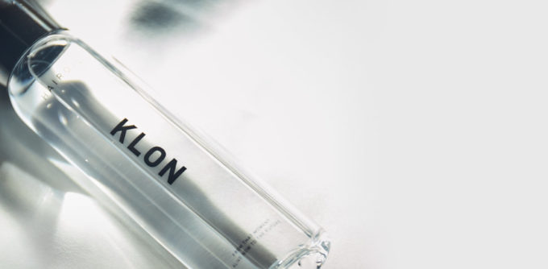
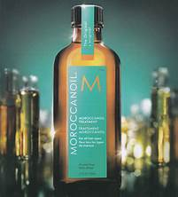

ここでは髪の毛の手入れの紹介をしていきます。綺麗な髪でいるためには毎日のヘアケアが大切です。
ではどのようにして美しい髪でいれるのか？
もっともスタンダードな方法はシャンプーやヘアドライなど毎日行うヘアケアです。すでに髪が傷んでしまっている場合トリートメントでダメージケアを行うといいでしょう。
髪の美しさを決めるものとして「キューティクル」があります。キューティクルとは髪の表面にある魚のウロコのような形状をした組織で、神の内部組織を守る働きをしています。このキューティクルによって髪は潤いをキープすることができるのです。
しかしキューティクルは非常に薄く、摩擦に弱い部分です。そのため長時間のドライヤー、濡れた状態で髪をこするなどの行為は避けるべきです。
上の写真はそのキューティクルを守るための＋αとして洗い流さないトリートメント（ヘアオイル）です。ヘアオイルには髪の毛に潤いを与え頭皮のコンディションを整えてくれるアイテムです。
ドライヤーやヘアアイロンの熱から髪を守ってくれるため、髪が傷んでしまっている人に特におすすめです。